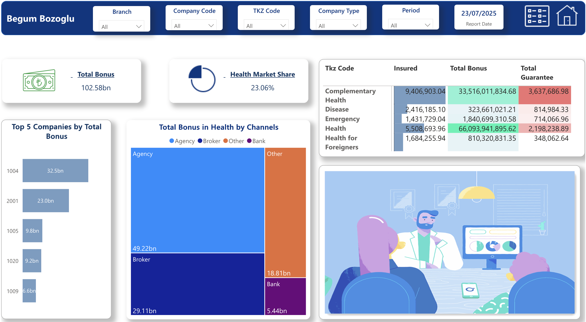
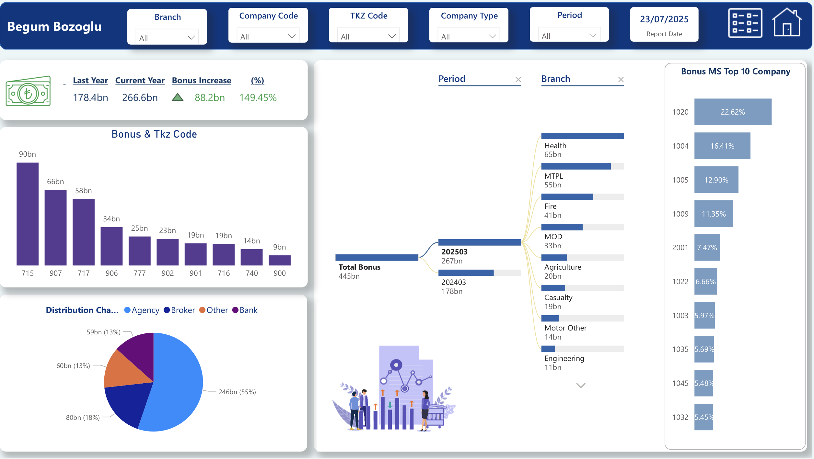
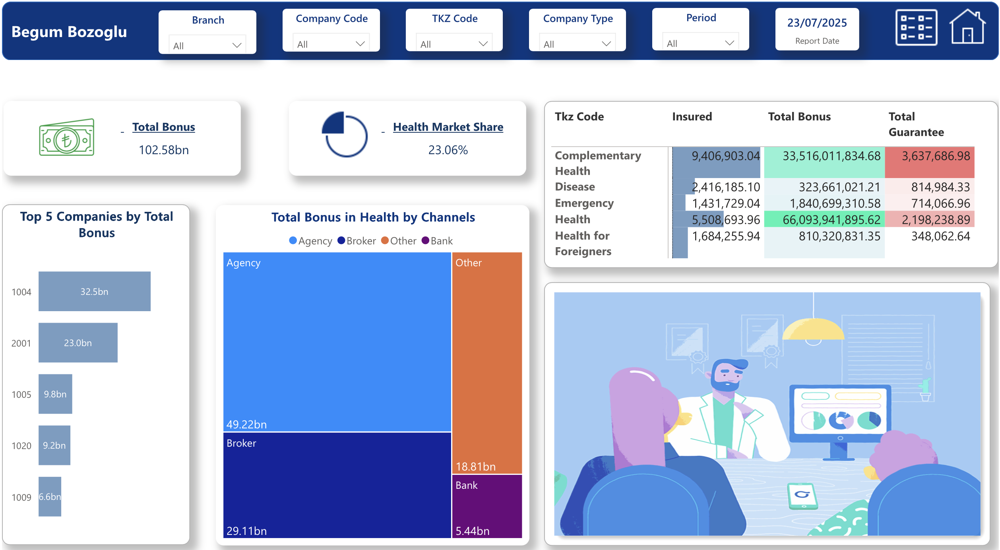
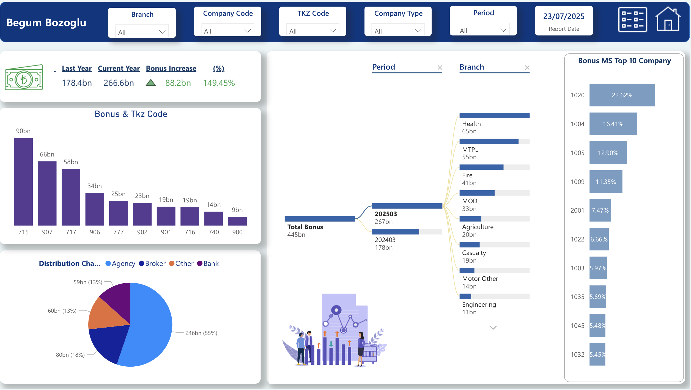
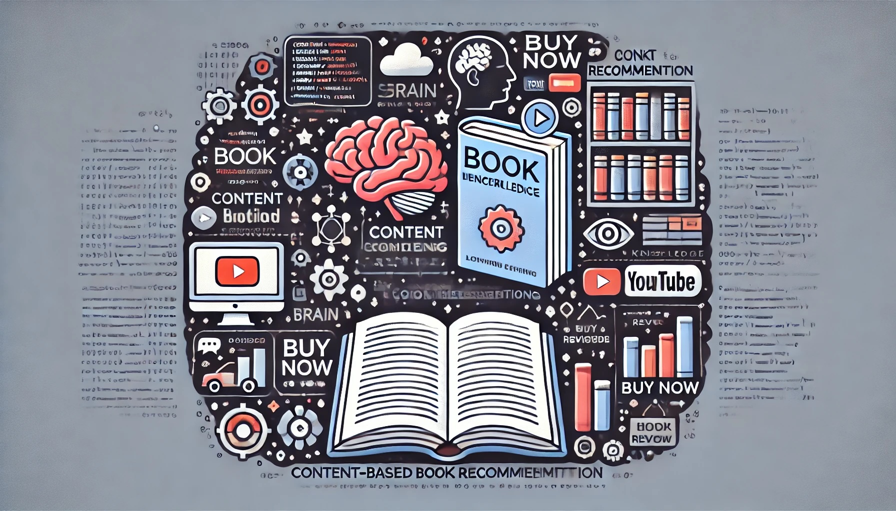
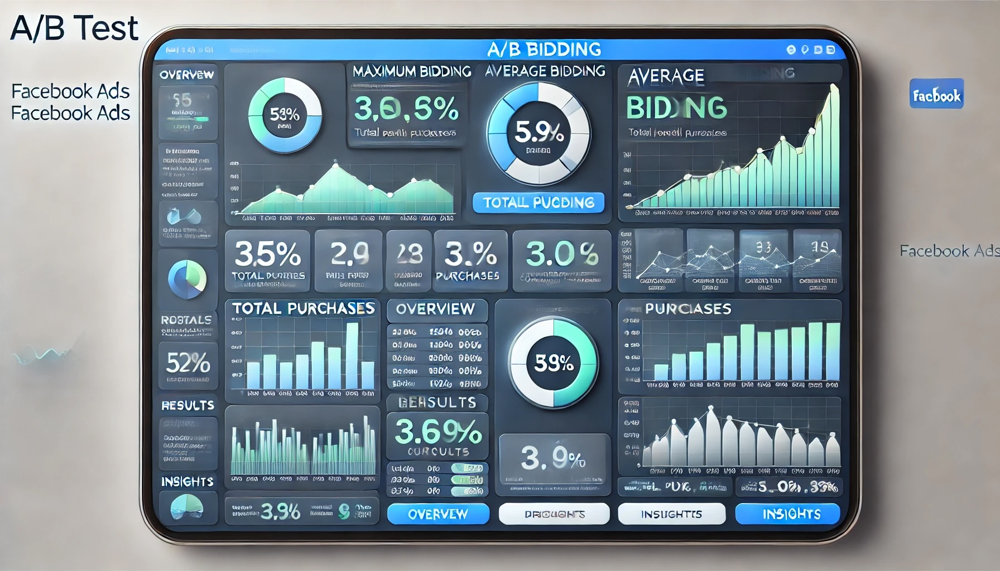

Projects
 



Telco Customer Churn
A project focused on exploring key insurance metrics to monitor portfolio performance and drive data-informed decisions.
Insurance Company Dashboard
A Power BI project focused on visualizing key insurance metrics to monitor portfolio performance and drive data-informed decisions.
Telco Customer Churn
A project focused on analyzing customer churn using predictive models.

MIUULib Feature Engineering
Feature engineering for improving model performance using MIUULib.

AB Testing Project
A/B testing analysis for optimizing product performance and user engagement.
Armut ARL Project
Applying association rule learning to improve customer recommendations on Armut.